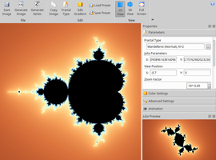
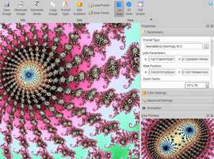
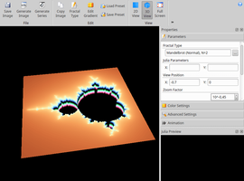

Fraqtive
Dieser Artikel wurde für die folgenden Ubuntu-Versionen getestet:
Ubuntu 16.04 Xenial Xerus
Ubuntu 14.04 Trusty Tahr
Zum Verständnis dieses Artikels sind folgende Seiten hilfreich:
Fraqtive  ist ein mathematisches Programm, welches Fraktale berechnet und darstellt. Der englischsprachige Fraktalgenerator steht unter der GNU GPL (General Public License) und ist somit Open Source. Er ermöglicht das Generieren und Betrachten von Fraktalen, die der Mathematiker Benoît Mandelbrot erstmals in den 1960er Jahren mit Hilfe der komplexen Zahlen darstellen konnte. Das wohl berühmteste Fraktal ist das Apfelmännchen.
ist ein mathematisches Programm, welches Fraktale berechnet und darstellt. Der englischsprachige Fraktalgenerator steht unter der GNU GPL (General Public License) und ist somit Open Source. Er ermöglicht das Generieren und Betrachten von Fraktalen, die der Mathematiker Benoît Mandelbrot erstmals in den 1960er Jahren mit Hilfe der komplexen Zahlen darstellen konnte. Das wohl berühmteste Fraktal ist das Apfelmännchen.
Was sind komplexe Zahlen? - Die Menge der komplexen Zahlen wurde eingeführt, um auch die Wurzeln negativer Zahlen berechnen zu können (die Wurzel einer negativen Zahl ist als reelle Zahl nicht definiert!). Für nähere Information sei hier auf Komplexe Zahlen verwiesen.
Die Linie der Apfelmännchens ist niemals gerade und hat bei Vergrößerung ein gleiches bzw. ähnliches Muster. Diese Eigenschaften bescheren dem Fraktal eine faszinierende Form und machen Lust, immer weiter in das Gebilde zu zoomen. Nähere Information zu Fraktalen gibt es in der Wikipedia unter Fraktale_Geometrie.
Installation¶
Folgendes Paket muss installiert [1] werden:
fraqtive (universe)
 mit apturl
mit apturl
Paketliste zum Kopieren:
sudo apt-get install fraqtive
sudo aptitude install fraqtive
Bedienung¶
Bei Ubuntu-Varianten mit einem Anwendungsmenü erfolgt der Programmstart über "Bildung -> Fraqtive" [2].
|  |
| Apfelmännchen (2D) |
|  |
| Zoom |
|  |
| Apfelmännchen (3D) |
Navigation¶
In der folgenden Tabelle sind die einfachsten Tastenkombinationen bzw. Mausbedienungen gelistet, um den Fraktalzoomer im 2D-Modus bedienen zu können.
| Navigation | |||
| Aktion | Tastenkombination | Mausbedienung | |
| In den "Startpunkt" zoomen |  und vom "Startpunkt" wegbewegen und vom "Startpunkt" wegbewegen |  scrollen scrollen | |
| Vom "Startpunkt" wegzoomen |  und vom "Startpunkt" wegbewegen und vom "Startpunkt" wegbewegen | scrollen | |
| Verschieben des Fraktals in eine beliebige Richtung |
⇧ + | drücken | |
| Fraktal in eine beliebige Richtung drehen |
⇧ + |
⇧ + scrollen | |
Fraktal wechseln¶
Unter "Parameters -> Fractal Type" kann man zwischen einem Mandelbrot-Fraktal und einem Julia-Fraktal (nach Gaston Maurice Julia) gewählt werden. Zusätzlich können unter diesem Menüpunkt auch die jeweiligen Formeln verändert werden.
Bookmarks¶
Mit Hilfe der Bookmarks kann man interessante Stellen der Fraktale speichern. Ruft man diese irgendwann wieder auf, wird das passende Fraktal generiert sowie auf die richtige Stelle gezoomt.
Speichern von Bildern¶
Bilder lassen sich direkt aus Fraqtive heraus mit der Tastenkombination Strg + S oder über den Menüpunkt "Save Image" in gängigen Bildformaten speichern.
 Mathematische Software
Mathematische Software- Erstellt mit Inyoka
-
 2004 – 2017 ubuntuusers.de • Einige Rechte vorbehalten
2004 – 2017 ubuntuusers.de • Einige Rechte vorbehalten
Lizenz • Kontakt • Datenschutz • Impressum • Serverstatus -
Serverhousing gespendet von